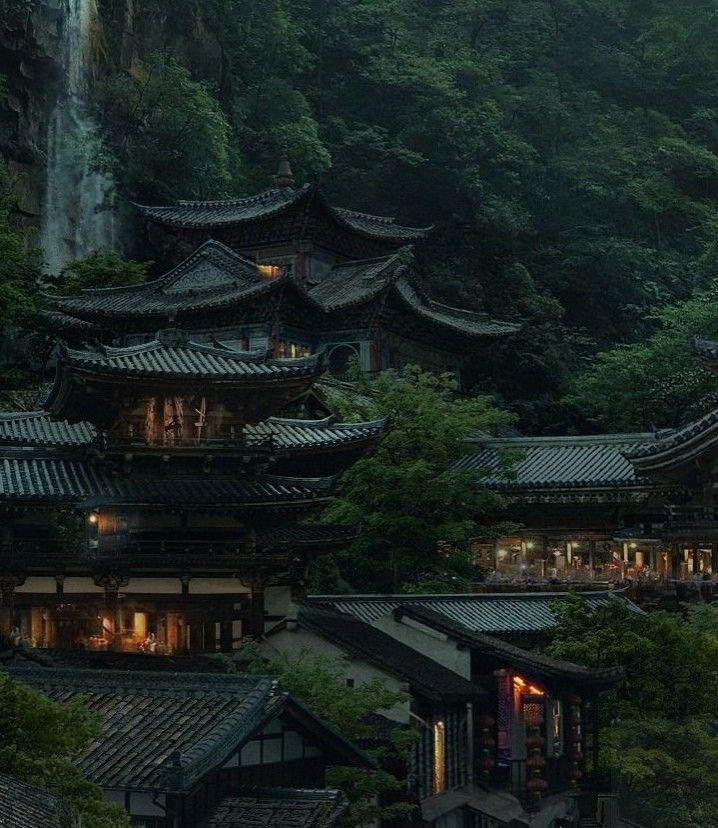

Многовековая история, самобытная культура и поразительная природа — всё это делает Японию одним из самых привлекательных и интересных направлений. Многовековые храмы величественная Фудзияма, традиционные бани и горячие источники, высокая кухня, завораживающие сады и не только. В этом путешествии ты возьмешь максимум и сможешь прочувствовать японское умиротворение.Забронировать турГорящие туры!
сезон красных кленов момидзиЭто не просто осенний период, это целый отдельный шестой сезон года, который покорит своей красотой каждого!Подробнее
прогулка в кимоно по киотоПереоденемся в традиционное кимоно и, получая незабываемое удовольствие, прогуляемся по старинному району Гион.Подробнее
величественная фудзиямаОна вдохновляет художников и фотографов, склоны привлекают альпинистов, а святыни так и зовут к себе паломников.Подробнее
О насВся наша команда, как и я сам, любим и ценим осознанные путешествия. Каждый маршрут, каждый человек на нашем пути - это удивительная история жизни. Жизни, как она есть..
Мы не считаем страны на карте и не спешим побить рекорды. Мы занимаемся и горим любимым делом, а оно зажигает каждого из вас. И это круто!
Фотографии любимых мест у наших туристов
 Вся галерея
ОтзывыКатя. С ребятами знакома уже давно, поэтому как только увидела у них новое направление Куба-Мексика, сразу решила, хочу. Мне всегда хотелось побывать в Мексике, но поехать сама никак не решалась, а тут такая возможность поехать с ребятами, которым я полностью доверяю. Поэтому долго я не думала:) Наверное, первый раз в своей жизни я серьезно подошла к вопросу сборов, благо ребята прислали подробную инструкцию, что нужно взять с собой. За это прям отдельное спасибо! За пару дней до поездки сформировали чатик, так что весь рабочий настрой быстро улетучился:) Конечно, наши приключения прошли не без приключений. Из 4-х чемоданов приехал только один, конечно, не мой. Однако у нас была такая дружная и позитивная компания, что мы не сильно переживали, и поехали греться на пляж (а пляжи в Гаване божественные)...Читать полностьюОляЖаль, подошло к своему логическому завершению мое второе чудесное путешествие. Но к радости - значит уже можно готовиться к следующему совместному приключению. Отдельное большое спасибо Денису - нашему сопровождающему, за его тактичность, деликатность и понимание, за особое сопровождение в различных непростых для меня испытаниях на рафтинге, снорклинге в закрытом синоде. Теперь я уже практически не боюсь. Перелистывая фотографии и просматривая видео, я вдруг заново осознаю какая удивительная возможность была мне предоставлена увидить неповторимый шарм Гаваны, сочетающийся с пустыми полками в магазинах, телефонах автоматах на улице, автомобилями выпуска 50 годов прошлого века, побывать в национальном театре оперы и балета на опере "Кармен", выпить мохито на крыше дорогого ресторана и бродить, бродить по узким улицам Гаваны, вглядываясь в лица совершенно незнакомой нам другой нации...Читать полностью